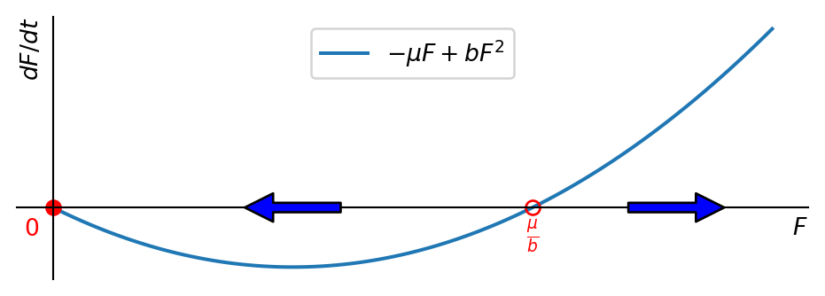

4 Sex-structured population models
Up to this point we have completely ignored that there are differences between the individuals making up a population. So we ignored all structure within a population. We will now start to remedy this. In this chapter we will start with the simplest possible structure by splitting the population into males and females. Keeping track of both the abundance of males and of females separately makes sense because
birth and death rates depend on the sex
both a male and a female are needed to produce offspring
Learning Objectives
After completing this chapter, you should be able to:
- Formulate and solve differential equations for sex-structured populations
- Analyze how sex-specific birth and death rates affect population dynamics
- Calculate long-term sex ratios
- Compare different functional forms for the mating function \(\phi(F,M)\).
- Understand female-limited reproduction and harmonic mean models
Key Ecological Concepts
Before diving into the mathematical models, let’s clarify some ecological terminology:
- Sex ratio: The proportion of males to females in a population
- Female-limited reproduction: When population growth is primarily limited by female numbers
- Mating function: Mathematical representation of how males and females interact to produce offspring
- Vital rates: Birth and death rates that may differ between sexes
- Demographic structure: How a population is divided into different groups (in this case, by sex)
In this chapter, instead of just looking at a single function \(N(t)\) giving the total population number, we will look at two functions \(M(t)\) and \(F(t)\) giving the number of males and females respectively. This division represents the most basic form of demographic structure in a population. We again describe them by differential equations that capture that the numbers can decrease due to deaths and increase due to births. \[ \begin{split} \frac{dF}{dt} &= -\mu_F F + b_F\,\varphi(F,M)\\ \frac{dM}{dt} &= -\mu_M M + b_M\,\varphi(F,M). \end{split} \tag{4.1}\] Here \(\mu_F\) and \(\mu_M\) are the death rates of females and males respectively, which are examples of sex-specific vital rates. The rate of births now depends both on the number of females and the number of males, because both males and females are needed to produce offspring. We formulate that dependence on the number of females and the number of males as a mating function \(\varphi(F,M)\). The functional dependence of the rate on \(F\) and \(M\) is the same for births of females and for births of males, but the extra factors \(b_F\) and \(b_M\) account for the differences between female and male birth rates, which are also vital rates that differ between sexes.
4.1 Symmetric model
We first consider the simpler situation where birth and mortality rates are the same for males and females: \[ \mu_F=\mu_M=\mu, ~~~b_F=b_M=b. \tag{4.2}\] In this case we can get a simple ODE for the difference \(F-M\) between the number of females and males: \[ \frac{d(F-M)}{dt}=-\mu(F-M). \tag{4.3}\] This equation has the solution \[ F(t)-M(t)=(F(0)-M(0))e^{-\mu t}. \tag{4.4}\] This means that the difference decreases exponentially over time. In particular, if we start with equal number females and males then the they will stay equal for all times.
To make further progress we need to make a concrete choice for the function \(\varphi(F,M)\). We will consider the choice \[ \varphi(F,M)=F\,M. \tag{4.5}\] This choice is motivated by the fact that both a male and a female is needed to produce offspring. Also the rate of births should increase if there are more females but also when there are more males.
A simple thing to note is that if \(M(0)=0\) then \(M(t)=0\) for all times. Then the number of females satisfies \[ \frac{dF}{dt}=-\mu F. \tag{4.6}\] This has the solution \[ F(t)=F(0)e^{-\mu t}. \tag{4.7}\] So if there are no males, the females have to die out as well.
We noted above that if initially \(F(0)=M(0)\) then \(F(t)=M(t)\) for all times. In that case the number of females satisfies \[ \frac{dF}{dt}=-\mu F+bF^2. \tag{4.8}\] This is illustrated in Figure 4.1.
Note that the non-zero fixed point at \(F=\mu/b\) is unstable. If \(F(0)<\mu/b\) then the females and hence the males go extinct. If \(F(0)>\mu/b\) then the females and hence the males grow rapidly. In fact, they grow so rapidly that the population size becomes infinite in finite time, as we can see when we solve the ODE.
We can solve Eq. 4.8 by separation of variables: \[ \int\frac{dF}{-\mu F+bF^2}=\int dt. \] We could do the integral on the left hand side by partial fractions. But to see the problem of the population size becoming infinite in finite time it is sufficient to consider the case of \(F>>1\) where we can neglect the term \(-\mu F\) in the denominator. Then we get \[ \int_{F(0)}^{F(t)}\frac{dF}{F^2}=\frac{1}{F(0)}-\frac{1}{F(t)}=\int_0^t b\, d\tilde{t}=bt. \] and hence \[ F(t)=\frac{1}{1/F(0)-bt}. \tag{4.9}\] So the population size becomes infinite at time \(t=1/(bF(0))\). So clearly this model is not ecologically sensible.
4.2 Female-limited reproduction
We will now consider a model where the birth rate depends only on the number of females: \[ \varphi(F,M)=F. \tag{4.10}\] This is clearly a strong simplification but is reasonable for populations where there are always more than enough males to fertilize all females.
With this simplification, the ODE for \(F\) becomes \[ \frac{dF}{dt}=-\mu_F F+b_F F=(-\mu_F+b_F)F. \tag{4.11}\] This has the solution \[ F(t)=F(0)e^{(-\mu_F+b_F)t}. \tag{4.12}\] We can now use this in the equation for \(M\): \[ \frac{dM}{dt}=-\mu_M M+b_M F=-\mu_M M+b_M F_0\,e^{(-\mu_F+b_F)t}. \tag{4.13}\] (We have used \(F(0)=F_0\) to make the equation more readable.) This is a first-order linear ODE with time-dependent inhomogeneity. We can solve it by the method of integrating factors. We first rewrite it in the form \[ \frac{dM}{dt}+\mu_M M=b_M F_0\,e^{(-\mu_F+b_F)t} \tag{4.14}\] and then observe that the left-hand side is proportional to a total derivative: \[ \frac{dM}{dt}+\mu_M M=\frac{d}{dt}(e^{\mu_M t}M)e^{-\mu_M t} \tag{4.15}\] Thus after multiplying both sides by \(e^{\mu_M t}\) we get \[ \frac{d}{dt}(e^{\mu_M t}M)=b_M F_0\,e^{(\mu_M-\mu_F+b_F)t}. \tag{4.16}\] We can now integrate both sides to get \[ e^{\mu_M t}M(t)-e^{\mu_M t}M_0=\frac{b_M F_0}{\mu_M-\mu_F+b_F}\left(e^{(\mu_M-\mu_F+b_F)t}-1\right). \tag{4.17}\] This can be solved for \(M(t)\): \[ M(t)=M_0+\frac{b_M F_0}{\mu_M-\mu_F+b_F}\left(e^{(-\mu_F+b_F)t}-e^{-\mu_M t}\right). \tag{4.18}\] We have been able to fully solve this model. At this stage it is worth checking that the dependence of the solution on the parameters and on the initial conditions is reasonable.
Next let us take a look at the sex ratio as \(t\to\infty\). Of course this only makes sense in the case where \(b_F\geq \mu+F\) because otherwise, according to Eq. 4.12, the females go extinct and then so do the males. With \(b_F\geq \mu+F\) we find \[\begin{split} s=\lim_{t\to\infty}\frac{M(t)}{F(t)} &=\lim_{t\to\infty}\frac{M_0+\frac{b_M F_0}{\mu_M-\mu_F+b_F}\left(e^{(-\mu_F+b_F)t}-e^{-\mu_M t}\right)}{F_0e^{(-\mu_F+b_F)t}}\\ &=\frac{b_M}{b_F-\mu_F+\mu_M}. \end{split} \tag{4.19}\]
Just for fun let us check what this model would predict for the sex ratio in the population of the US, using data about births and deaths from 1992. \[ \begin{split} \mu_F&=807/100,000/\text{year}, ~~~\mu_M=902/100,000/\text{year},\\ b_F&=1480/100,000/\text{year}, ~~~b_M=1550/100,000/\text{year}. \end{split} \tag{4.20}\] Substituting these values into Eq. 4.19 we get \(s \approx 0.9841\). The actual ratio in the US in 1992 was \(0.953\). Of course this is not to be taken seriously. To start with, human populations are not solely female-limited. But there are many other criticisms that can be made of this model when applied to human populations.
4.3 Harmonic mean model
We will now consider a model where the birth rate depends on both the number of males and the number of females. We choose to set \(\varphi(F,M)\) to a weighted average of \(F\) and \(M\): \[ \varphi(F,M)=D\,M+(1-D)F \tag{4.21}\] with some suitably chosen weighting factor \(D\). We want to keep the feature that when there is an over-abundance of males, then the birth rate is limited mostly by the number of females and vice versa. So we choose \(D=M/(F+M)\), which is the relative abundance of males. This makes \(1-D=F/(F+M)\), which is the relative abundance of females. This gives \[ \varphi(F,M)=\frac{M}{F+M}F+\frac{F}{F+M}M=\frac{2FM}{F+M}. \tag{4.22}\] We can now use this in the ODEs for \(F\) and \(M\): \[ \begin{split} \frac{dF}{dt} &= -\mu_F F+b_F\frac{2FM}{F+M},\\ \frac{dM}{dt} &= -\mu_M M+b_M\frac{2FM}{F+M}. \end{split} \tag{4.23}\] We will not try to solve this coupled system of non-linear ODEs. Instead we will directly look at the long-term sex ratio. We can derive an ODE for the sex ration \(M/F\): \[ \frac{d}{dt}\frac{M}{F}=\frac{\frac{dM}{dt}F-M\frac{dF}{dt}}{F^2}. \tag{4.24}\] Because we are only interested in the long-term behaviour we look at the fixed point of this equation, hence we set the left-hand side to zero. We then get \[ \frac{dM}{dt}F-M\frac{dF}{dt}=0. \tag{4.25}\] We can now use the ODEs for \(F\) and \(M\) to get \[ \begin{split} \frac{dM}{dt}F-M\frac{dF}{dt}=&\left(-\mu_M M+b_M\frac{2FM}{F+M}\right)F\\ &-M\left(-\mu_F F+b_F\frac{2FM}{F+M}\right)=0. \end{split} \tag{4.26}\] We multiply by \(F+M\) and divide by \(FM\) to get \[ -\mu_M(F+M)+2b_MF+\mu_F(F+M)-2b_FM=0. \tag{4.27}\] Collecting terms proportional to \(F\) and \(M\) we get \[ (-\mu_M+2b_M+\mu_F)F=(\mu_M-\mu_F+2b_F)M. \tag{4.28}\] We can now solve this equation for the asymptotic sex ratio \[ s=\lim_{t\to\infty}\frac{M(t)}{F(t)}=\frac{\mu_M-\mu_F+2b_F}{-\mu_M+2b_M+\mu_F}. \tag{4.29}\]
Even though the sex ratio approaches a fixed point as \(t\to\infty\), the population numbers themselves do not. Once the sex ratio has settled to the value \(s\), we have \(M=sF\) and we can use this to get a single ODE for \(F\): \[ \begin{split} \frac{dF}{dt}&=-\mu_F F+b_F\frac{2MF}{F+M}\\ &=-\mu_F F+\frac{2s}{s+1}b_FF\\ &=rF \end{split} \tag{4.30}\] where \[ r=-\mu_F+b_F\frac{2s}{s+1}=\frac{2b_Mb_F-\mu_Mb_F-\mu_Fb_M}{b_M+b_F}. \] This is a linear equation and has the solution \[ F(t)=F_0e^{rt}. \tag{4.31}\]
So we have an exponential growth model for both \(F\) and \(M\), but the exponent has a modified birth rate that takes the sex ratio into account.
To arrive at more realistic models we should introduce a carrying capacity into the model.
4.4 Exercises
* Geometric mean sex-structured model
Exercise 4.1 Consider the sex-structured population model \[ \frac{dF}{dt}=-\mu_F F+b_F\phi(F,M), ~~~\frac{dM}{dt}=-\mu_M M+b_M\phi(F,M), \] where \(F(t)\) denotes the number of females and \(M(t)\) the number of males and \(\mu_F,\mu_M,b_F,b_M\) are positive constants. Make the choice \[ \phi(F,N)=\sqrt{FM}. \] Determine the asymptotic sex ratio \[ s=\lim_{t\to\infty}\frac{M(t)}{F(t)}? \] What is the numerical value of s when \(\mu_F=2,\mu_M=1,b_F=1/2,b_M=3/2\) per year?
Dominance structure
Exercise 4.2 We consider a population of primates and split this into three components:
\(M\): dominant (alpha) males,
\(F\): dominant (alpha) females,
\(Q\): subordinate males or females.
Only alpha males and alpha females mate to reproduce offspring. The subordinate individuals are prevented from mating. The alpha females are too engaged with looking after their young to gather food and instead rely on the food gathered by the subordinate individuals. We propose to model this with the equations \[ \begin{split} \frac{dF}{dt}&=b_F F-\frac{\mu_F F}{Q}F,\\ \frac{dM}{dt}&=b_M F-\mu_M M,\\ \frac{dQ}{dt}&=b_{Q} F-\mu_{Q} Q , \end{split} \] where \(b_F>\mu_F,b_M>\mu_M\) and \(b_Q >\mu_Q\) are all positive constants.
One of the terms incorporates a ratio of different components. Describe what this might be intended to model.
Derive an ODE for the ratio \(F/Q\). Either by recognising the ODE for \(F/Q\) as equivalent to one for which the solution was given in the lecture notes, or by integrating the ODE, give the solution for \(F/Q\) as a function of time, with initial condition \(F(0)=F_0, Q (0)=Q_0\).
By using your solution from the previous part or by other means, show that as \(t\to\infty\) the ratio between alpha females and subordinate individuals goes to \[ \frac{b_F+\mu_Q }{b_Q +\mu_F}. \]
Derive an expression for the long-term alpha female to alpha male ratio \(R=\lim_{t\to\infty}F/M\) in terms of the model parameters and show that it is positive.
Describe a limitation of the birth terms in the model and suggest improved expressions.
Summary
This chapter introduced several key concepts in sex-structured population dynamics:
- Basic Model Structure
- Population divided into males (M) and females (F)
- Each sex has its own vital rates
- Reproduction requires both sexes, encoded in the mating function \(\phi(F,M)\)
- Symmetric Model
- When birth and death rates are equal for both sexes
- Difference between male and female numbers decreases exponentially
- Quadratic mating function can lead to population explosion in finite time
- Female-Limited Reproduction
- Mating function depends only on female numbers
- Applicable when males are abundant relative to females
- Leads to predictable long-term sex ratio
- Harmonic Mean Model
- Mating function depends on weighted average of male and female numbers
- More realistic for populations where both sexes can be limiting
- Produces stable long-term sex ratio
In the next chapters, we will explore more complex demographic structures, including age structure and spatial distribution.